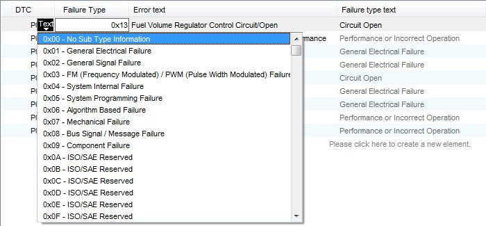
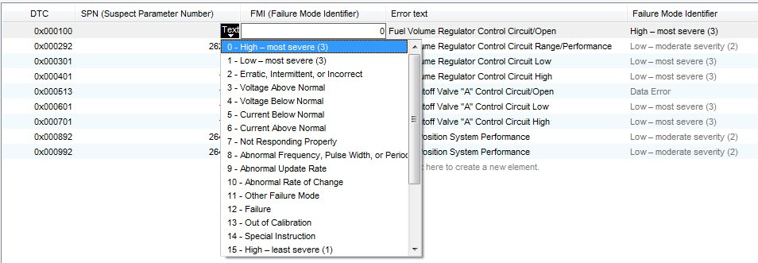

DTC List
See also the DTC Feature.
DTC List
CANdelaStudio shows DTCs in a DTC list in the contexts [DTC-R020]...
The template controls...
[DTCUI-R050 DTC Columns] CANdelaStudio shows DTC columns in this order:
You can modify DTC properties
For a translatable DTC column with a selection list, see [DTCUI-R095] below.
The following operations are available as buttons or in the context menu of the DTC list.
Creates a new DTC [DTCOP-R010].
[DTCUI-R090] For a translatable DTC column with a selection list [DTCC-R095], the context menu contains an item "Other Value...".
The item opens the property dialog in "Show details" mode [DTCUI-R095].
Shows a selection list of DTCs in the DTC Pool which do not yet exist in the DTC list.
Inserts the selected DTC(s) as a copy, see [DTCOP-R020].
Shows a selection list of DTCs in the DTC Pool which do not yet exist in the DTC list.
Inserts the selected DTC(s) as a reference into DTC Pool, see [DTCOP-R030].
Switches the DTC list to be shown full screen (go back by pressing the ESC key).
[DTCUI-R035] Copies [DTCOP-R035]...
See also "How to Edit DTCs Efficiently" [PRDTC-R035].
Only sensitive if...
Moves the selected DTC(s) to the clipboard.
Copies the selected DTC(s) to the clipboard.
Pastes DTCs from the clipboard (if it contains DTCs), see [DTCOP-R040].
Pastes DTCs from the clipboard (if it contains DTCs), see [DTCOP-R045].
Deletes the selected DTC(s), see [DTCOP-R018].
Pastes DTCs that have been copied from the DTC Pool to the clipboard, see [DTCOP-R048].
Replaces DTCs referencing into DTC Pool with copies, see [DTCOP-R050].
Replaces DTCs not referencing into DTC Pool with references into DTC Pool, see [DTCOP-R060].
[DTCUI-R021] Shows the properties dialog for the DTC Data Object [DTC-R021].
Shows the properties dialog for the DTC.

DTC Editing Using the Special FTB Functionality
[DTCUI-R030] When setup in the template [DOC-R400], the DTC table of the "Fault memory" diagnostic instance shows...

DTC Editing Using the Special FMI Functionality
[DTCUI-R040] When setup in the template [DOC-R400], the DTC table of the "Fault memory" diagnostic instance shows...
See Failure Mode Identifier (FMI).
[DTCUI-R410 From Repository] The button opens the Select from Repository dialog to import DTCs from a repository.
[DTCUI-R050-Attributes] CANdelaStudio shows attributes with “visible in separate table column” set [ATTR-R090-DTC] directly in the DTC table.
[DTCUI-R050-AttributesEditing] When editing an attribute value in the DTC list, CANdelaStudio shows the message about a format violation like in the property dialog (CDS-29237 8.2 SP3).
Procedures:
User Interface:
Features: